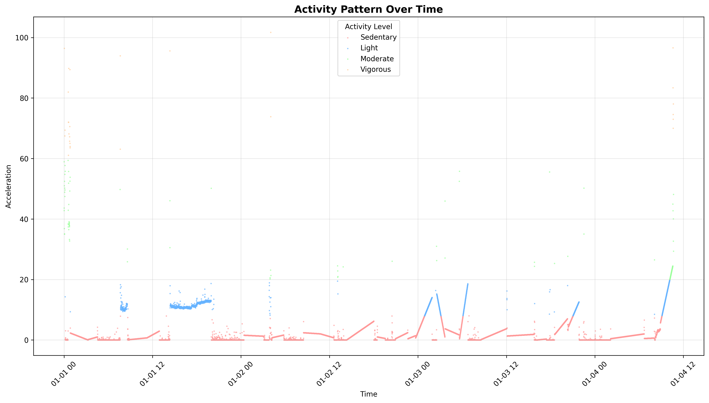
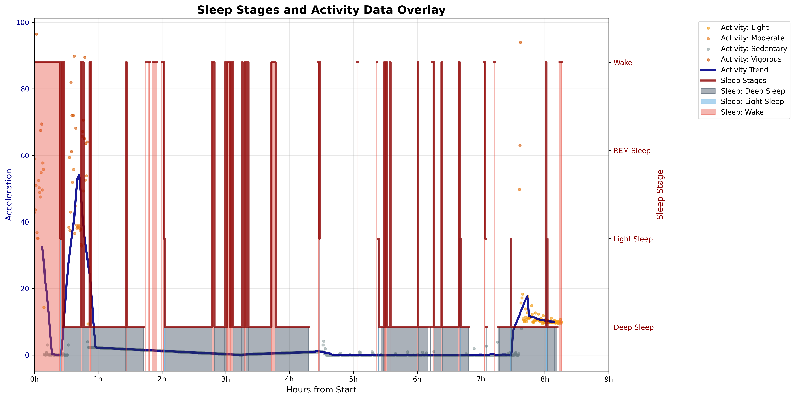

Sleep Actigraphy
Sleep Activity Pipeline (with PyActigraphy, Accelerometer and YASA)
This guide demonstrates a comprehensive pipeline for analyzing sleep stages and activity patterns using EEG and accelerometer data acquired from a Mentalab Explore device. For those specifically interested in sleep staging, our Sleep EEG Analysis application example offers further insights.
Overview
This pipeline processes raw EEG and orientation data to achieve three main objectives:
-
Detect sleep stages using YASA (Yet Another Spindle Algorithm)
-
Analyze movement patterns using accelerometer and pyActigraphy
-
Visualize sleep-activity relationships
Input Data
The pipeline utilizes the following input files:
-
data/Mentalab-sleep-analysis_ExG.csv- Contains the EEG data. -
data/Mentalab-sleep-analysis_ORN.csv- Contains the orientation and accelerometer data.
Pipeline Steps
1. Data Preprocessing (preprocess.py)
The initial step involves data preprocessing, which can be executed using the following command:
python preprocess/preprocess.pyThis script is crucial for synchronizing EEG and orientation data and extracting key accelerometer features. It aligns timestamps between the two data streams, calculates movement magnitudes, applies necessary filtering, and then segments the data into 30-second epochs for consistent analysis.
Outputs:
-
processed_data/eeg_synchronized.csv- Synchronized EEG data -
processed_data/accelerometer_data.csv- Formatted accelerometer data -
processed_data/movement_epochs.csv- 30-second movement summaries
2. Sleep Stage Detection (sleep_staging.py)
This step focuses on analyzing the EEG data to detect sleep stages using YASA. It leverages MNE-Python for essential EEG preprocessing, including filtering (0.1-40 Hz bandpass) and resampling to 100 Hz for compatibility with YASA. YASA then automates sleep staging, classifying periods into Wake, N1, N2, N3, and REM, and calculates various sleep statistics and events.
python sleep_staging/sleep_staging.pyLibraries:
-
MNE-Python for EEG preprocessing, including filtering and resampling
-
YASA for automated sleep staging using machine learning
Outputs:
-
sleep_staging_results/hypnogram.csv- A time-series representation of detected sleep stages. -
sleep_staging_results/sleep_statistics.csv- Key sleep quality metrics -
sleep_staging_results/bandpower_by_stage.csv- Results of frequency analysis for each sleep stage
3. Accelerometer Processing (preprocess_acc.py)
This script processes the raw accelerometer data using the specialized Oxford Accelerometer Library, which is automatically installed. It extracts activity counts and movement patterns, providing detailed epoch-level summaries with 30-second windows.
python preprocess/preprocess_acc.pyPurpose: Process accelerometer data using accelerometer library.
Library:
-
Accelerometer Library for activity classification
-
Automatically installs via
pip install accelerometer
Process:
-
Processes raw accelerometer CSV using the
accProcesscommand -
Extracts activity counts and movement patterns
-
Creates epoch-level summaries with 30-second windows
Outputs:
-
accelerometer_results/acc_data-timeSeries.csv.gz- High-resolution activity data -
accelerometer_results/acc_data-epoch.csv- 30-second epoch summaries -
accelerometer_results/acc_data-summary.json- Processing metadata
4. Activity Analysis (analyze_activity.py)
Here, the processed accelerometer data is converted into a pyActigraphy-compatible format for in-depth activity pattern analysis. This step applies activity classification based on configurable cut-points: Sedentary (≤8 mg), Light (8-20 mg), Moderate (20-60 mg), Vigorous (60-120 mg), and Very Vigorous (>120 mg), generating comprehensive activity reports and visualizations.
python analyze/analyze_activity.pyLibrary:
-
pyActigraphy for activity pattern analysis
-
Activity classification with configurable cut-points
Outputs:
-
categorized_activity_data.csv- Categorized activity levels over time -
activity_report.csv- Summary statistics -
activity_pattern_over_time.png- Visualization

Sleep activity pattern over time.
5. Integrated Visualization (visualization.py)
The final step in the pipeline generates insightful visualizations that integrate sleep stages and activity data. It produces:
python visualize.pyGenerates:
-
Activity Over Time - Movement patterns with trend analysis
-
Sleep Hypnogram - Clinical-style sleep stage visualization
-
Overlay Plot - Combined sleep-activity relationships
Results and Interpretation
Sleep-Activity Correlation Analysis
This pipeline reveals interesting correlations between EEG-derived sleep stages and accelerometer-detected movement patterns. The overlay visualization is particularly insightful, illustrating how activity levels correspond with different sleep phases.

Sleep stages and sleep activity overlayed in one graph.
Sleep Architecture Pattern
The analysis of a truncated 8.5-hour recording showed sleep onset approximately 30 minutes after recording began. Sleep stages were distributed as follows:
-
Total Recording Duration (truncated): ~8.5 hours
-
Sleep Onset: Approximately 30 minutes after recording start
-
Sleep Stages Distribution:
-
Wake periods: Brief awakenings throughout the night
-
Light Sleep (N1/N2): Predominant in early and late sleep periods
-
Deep Sleep (N3): Concentrated in first half of sleep, hours 1-4 and 6-7
-
REM Sleep: Distributed across sleep period with longer episodes in later hours
-
Movement-Sleep Stage Relationships
Understanding how movement aligns with sleep stages provides deeper insights:
-
Wake Periods (Pink/Red regions)
Unsurprisingly, high activity spikes (
50-95acceleration units) occur exclusively during wake periods, characterized by vigorous activity (orange dots). Multiple brief awakenings during sleep indicate normal sleep fragmentation. -
Deep Sleep (N3 - Dark Gray regions)
Movement drops to near-zero, demonstrating effective muscle atonia. The longest continuous deep sleep periods were observed in the first sleep cycle, indicating good sleep consolidation.
-
Light Sleep and REM (Light Blue regions)
Moderate activity is detected during sleep stage transitions, and some movement during REM sleep is consistent with incomplete muscle atonia, the “REM paradox”. Small activity spikes at stage boundaries signify natural sleep transitions.
Accelerometer Validation and Methodological Strengths
The accelerometer data showed strong concordance with EEG-derived sleep stages, objectively validating the accuracy of sleep scoring. This multi-modal approach, combining EEG and accelerometer analysis with standardized libraries like YASA and pyActigraphy, ensures reproducible results and holds significant clinical utility for accelerometer-based sleep monitoring. Its real-time potential makes it suitable for longitudinal sleep monitoring applications.
Statistical Summary
Based on the analyzed data:
-
Sleep Latency: ~30 minutes (normal range)
-
Sleep Efficiency: High, with minimal wake periods during sleep
-
Movement-Sleep Correlation: Strong negative correlation between activity and sleep depth
-
Sleep Stage Transitions: Well-defined boundaries with appropriate movement patterns
Key Libraries Used
| Library | Purpose | Usage |
|---|---|---|
YASA |
Sleep staging |
Automated EEG-based sleep detection |
MNE-Python |
EEG processing |
Signal filtering, epoching, preprocessing |
Oxford Accelerometer |
Activity processing |
Raw accelerometer data analysis |
pyActigraphy |
Activity analysis |
Research-standard activity metrics |
Pandas/NumPy |
Data processing |
Data manipulation and analysis |
Matplotlib |
Visualization |
Plot generation and formatting |
Final Outputs
Quick Start
# 1. Ensure you have the input files
# Mentalab-sleep-analysis_ExG.csv
# Mentalab-sleep-analysis_ORN.csv
# 2. Run the complete pipeline
# !!!important: rename files and relocate files accordingly
python [name_of_program.py]Dependencies
# may require setting up different environments for yasa and accelerometer library
pip install pandas numpy matplotlib seaborn
pip install mne yasa
pip install accelerometer
pip install pyActigraphy
pip install scikit-learn # for classification metricsBroadening Horizons: Applications and Future Directions
This pipeline offers a robust foundation for both research and clinical applications. Researchers can delve into detailed sleep architecture studies, explore circadian rhythms, identify sleep disorders, and assess the impact of interventions on sleep quality. Clinically, it provides objective sleep quality assessment, supports home sleep monitoring, helps track treatment efficacy, and offers valuable diagnostic support.
On the technical side, it’s a powerful tool for algorithm validation, sensor fusion, generating data for machine learning models, and ensuring quality control in sleep analysis.
Looking ahead, we’re excited about the potential for future enhancements. We aim to enable real-time processing for live sleep monitoring, integrate machine learning for automated sleep quality scoring, and even incorporate environmental data like light, temperature, and sound for a more holistic understanding of sleep.
This comprehensive sleep activity pipeline, leveraging the power of PyActigraphy, accelerometer data, and YASA, provides an in-depth and versatile tool for understanding the intricate relationship between sleep stages and activity patterns. Whether for advancing scientific research or supporting clinical practice, we believe this solution will pave the way for more precise and accessible sleep analysis.